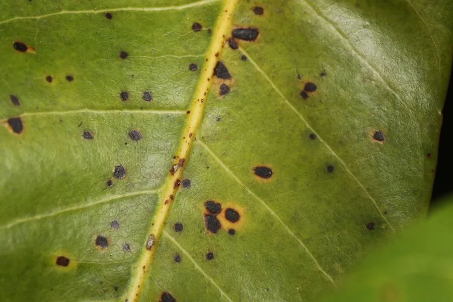

真菌 · 真菌界
胶孢炭疽菌 Colletotrichum gloeosporioides

引起多种果树和作物炭疽病的植物病原真菌，孢子盘会渗出粉红色黏液，是农业上重点防治的病害之一。
- 分类
- 门子囊菌门纲粪壳菌纲目小丛壳目科小丛壳科属炭疽菌属
- 栖息环境
- 热带和亚热带果树的叶片、果实和枝梢上，高温高湿时易发病
- 地理分布
- 全球热带、亚热带和温带果区广泛分布，中国南方普遍发生
- 保护级别
- 暂无评估（植物病原菌，非保护对象）
物种志
胶孢炭疽菌是子囊菌门小丛壳目的植物病原真菌，菌丝无色透明，有隔膜。它的无性世代产生分生孢子盘，分生孢子盘在寄主表面形成小黑点，潮湿时会渗出粉红色至橙色的孢子黏液；分生孢子无色、单胞、呈圆柱形。有性世代产生子囊壳，但田间较少见。
胶孢炭疽菌的寄主范围极广，可侵染芒果、柑橘、苹果、葡萄、辣椒、草莓等数百种植物，引起叶片斑点、果实腐烂和枝梢枯死，是中国南方果区重要的病害之一。它常在高温高湿的雨季暴发，孢子靠雨水和昆虫传播。防治上以选用抗病品种、清除病残体、合理修剪通风和适时喷药为主。该菌也是植物病理学研究的模式病原之一。
形态与习性
- 分类子囊菌门小丛壳目炭疽菌属
- 孢子盘在寄主表面形成小黑点，潮湿时渗出粉红色黏液
- 分生孢子无色、单胞、圆柱形
- 寄主芒果、柑橘、苹果、葡萄、辣椒、草莓等数百种植物
- 病害炭疽病，引起叶斑、果腐和枝梢枯死
- 发病条件高温高湿的雨季，孢子靠雨水和昆虫传播
- 防治抗病品种、清除病残体、修剪通风和适时喷药
趣味知识
- 胶孢炭疽菌的孢子盘在潮湿时会渗出粉红色的孢子黏液。
- 它的寄主范围极广，可侵染芒果、柑橘、葡萄等数百种植物。
- 炭疽病常在高温高湿的雨季暴发，造成果实腐烂。
- 清除病残体和合理修剪是防治炭疽病的重要措施。